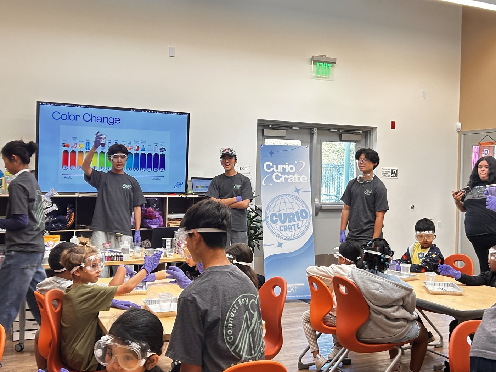
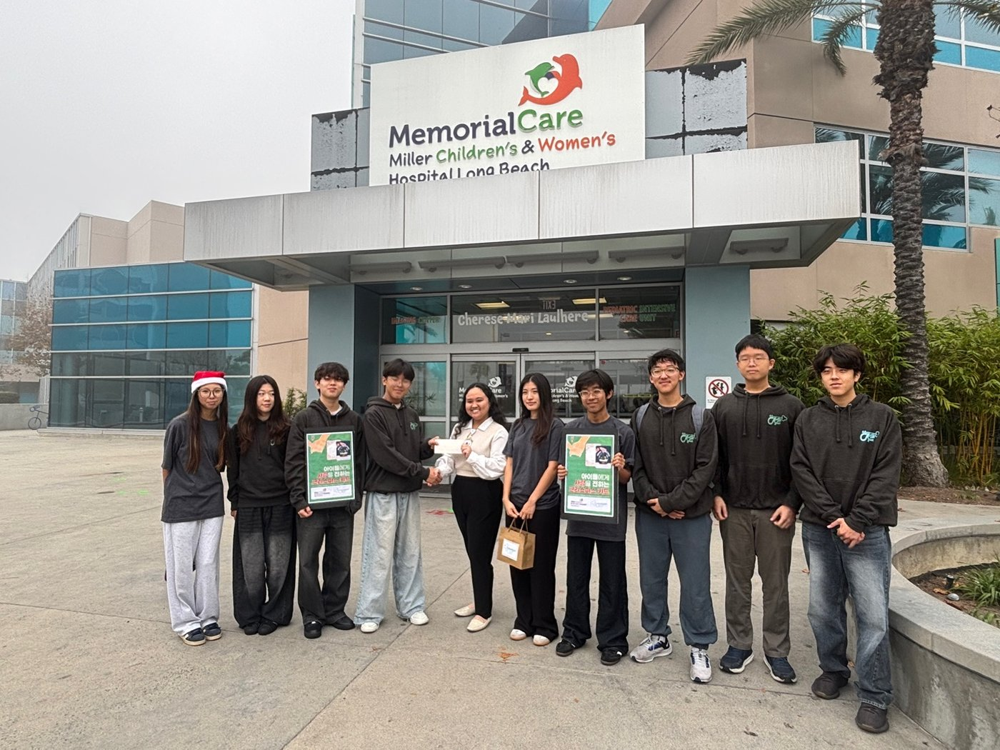

Connect Key Foundation is the 501(c)(3) youth nonprofit I founded and now run across 17+ regions, including Southern California, Georgia, and Hong Kong. I direct 150+ volunteers in five divisions — STEM, art, English, outreach, and environment — who have delivered more than 50,000 hours of free service to their communities.
We put CurioCrate STEM kits into students’ hands, run free labs at the YMCA, and bring therapeutic art and conversation to patients at PIH Health and Miller Children’s & Women’s Hospital.
Two published books turned what our volunteers were hearing in the field into something readers could hold.
“Dear World: Now We Speak” and “Korea: The Heart and Art” joined a $5,000 Society for Science STEM Action Grant in letting us reach further every year. This year we also directed LA wildfire disaster relief efforts and led senior outreach visits across Cerritos and Fullerton.


It started on a call with friends that ran way past 1am, complaining about how repetitive most volunteering felt — showing up to do work nobody really needed help with. So we started calling elementary schools instead. I still think about one of our shyest students tugging my shirt to ask what we were doing next week, and another kid yelling “bye, science guy!” on his way out. That’s the part that keeps me doing this, not the volunteer count.